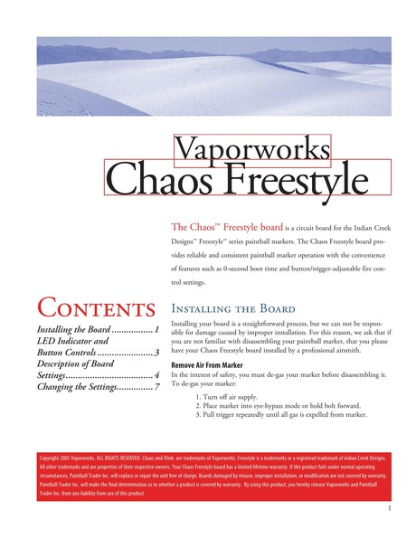
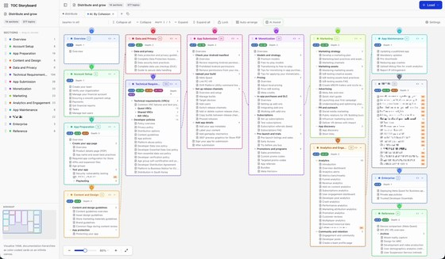
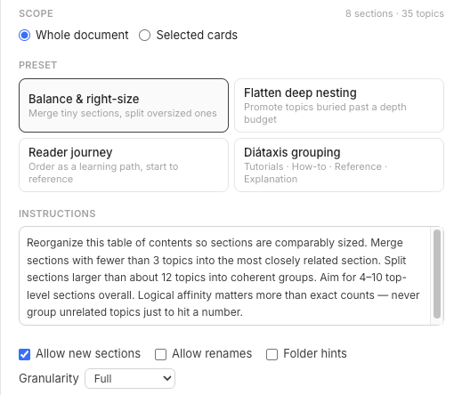

Meta Quest Virtual Reality Check (VRC) guidelines
The certification requirements every Meta Quest app must meet for store distribution. I created the initial VRC documentation set in 2017 and expanded it after returning to Meta in 2020.
Editor & Documentation Engineer
rogerawong@gmail.com · linkedin.com/in/rogerawong
Twenty-five years making complex technical subjects clear, accurate, and consistent: platform standards, compliance documentation, brand guidelines, and the AI-assisted tooling that scales them. Most recently at Meta Reality Labs, owning developer education for the Meta Quest developer platform.
Everything below is published on Meta’s public developer site. My role and dates are stated per item; Meta’s team has maintained many of these pages since I wrote them, which is what good documentation systems are for. Featured entries link archived July 2026 snapshots in case pages move.
The certification requirements every Meta Quest app must meet for store distribution. I created the initial VRC documentation set in 2017 and expanded it after returning to Meta in 2020.
Wrote the developer-facing brand guidelines for Meta Quest: translated marketing’s brand standards into the rules third-party developers follow to pass store review, and encoded the brand terminology into automated linting so consistency stopped depending on memory.
Wrote the original developer guidance in 2021 on a 10-day regulatory deadline, first draft in four days. Developer failure rates fell from 60% to 2.6% after clearer guidance shipped.
Wrote the launch documentation and the dashboard revision, with specific guidance on maximizing the feature’s value. Early results showed a 25% sales lift for developers who fully adopted it.
Conceived the series after realizing developers treat platform documentation as authoritative business advice, validated the need through indie-developer interviews at GDC, and wrote all four guides with product marketing: marketing plan, influencer marketing, social media, and marketing assets.
archived: plan · influencer · social · assets
Edited this specialist-authored graphics guide and carried it through legal review to publication (2021). The edit is invisible in the finished page, which is the measure of it done well: what shows is an engineer’s deep expertise arriving readable, shipped, and legally clean.
Authored this architecture explainer: why mobile GPUs render in tiles, taught through numbers that carry the argument (a 300-watt desktop power budget shrunk to six; an eye buffer split into 135 tiles). The mental model beneath the platform’s optimization guides.

Firmware documentation written on contract for VaporWorks in the early 2000s, for an audience of teenagers with short attention spans: labeled board diagrams, blink-code tables, and safety warnings built to stick (“broken paint is liquid sandpaper”). The same technical rigor as everything above, with the register dialed to the reader in front of it.
Built to demonstrate writing to a controlled-language specification: a concept document I shipped with the CodeWarrior development tools at Metrowerks in 2002, rewritten to ASD-STE100 Simplified Technical English (Issue 9), the controlled language of aerospace and defense maintenance documentation. Every difference between the versions can be traced to an STE rule; the vocabulary is checked word by word against the Issue 9 dictionary, with domain terms entering through a declared technical-name glossary, the standard’s own mechanism.
Supporting pieces from the same platform, listed without ceremony: Data security best practices · Data Use Checkup · Pre-launch listings and sales · Developer Profiles · 360° preview graphics · Boosting CPU and GPU levels · Capture MR and VR apps for publishing
Encoded Meta’s house style into Vale rules and custom linters used by roughly 100 engineers and writers, with publish gates that held risky changes for human review. The automated half of an editorial gate; I was the human half.
Built an AI pipeline converting conference-session videos into searchable, publishable developer guides, surfacing knowledge that was otherwise locked in video.

An LLM-backed information architecture tool for visualizing and reorganizing content structures, built with Claude. Proof-of-concept in four hours; multi-user, multi-tenant prototype on Firebase three days later. As the models improved, the collaboration seat went to an LLM partner instead of a second human.

An open-source information architecture tool that shows a documentation site’s table of contents the way readers never see it: whole. Sections become cards on an infinite canvas; restructuring is dragging; alternative structures live in tabs for comparison; and the result writes back losslessly to the file the doc system actually reads, byte-stable where nothing changed. It speaks seven formats, DocFX to Sphinx. An optional AI layer brings the LLM in as an IA advisor: ask for the reorganization you want in plain language, or start from presets like reader journey and Diátaxis grouping. I built it in TypeScript by directing Claude agents under written charters with receipt-checked reports, and the design decision records ship in the repo. It’s AGPL-3.0, and private by design: nothing leaves the browser except the section titles you choose to send, on your own API key.
An open-source MCP server that serves NVIDIA CUDA-Q’s documentation to AI agents, version-pinned to the developer’s installed package: five tools over an offline index of 109 pages, 2,589 API symbols, and 201 runnable examples. Without this MCP server, AI answers from a blend of docs from different versions of CUDA-Q, regardless of the version the developer actually has installed.
the repository · on PyPI · the upstream issue (NVIDIA/cuda-quantum #5100)
{kind=link}